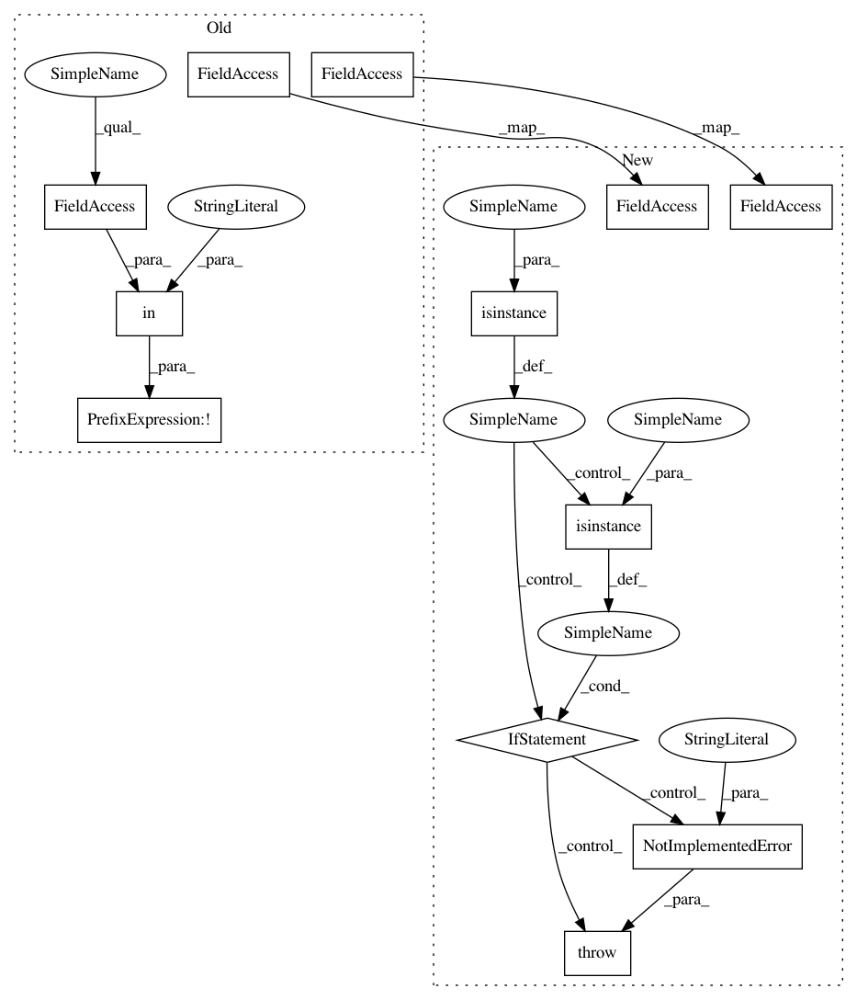

05ff22f2cdff1f560975d60c7371cedcf4dca201,bindsnet/learning/__init__.py,,post_pre,#Any#,6
Before Change
| :code:`conn` (:code:`bindsnet.network.topology.AbstractConnection`):
An instance of class :code:`AbstractConnection`.
if not "kernel_size" in conn.__dict__:
x_source, x_target = conn.source.x.unsqueeze(-1), conn.target.x.unsqueeze(0)
s_source, s_target = conn.source.s.float().unsqueeze(-1), conn.target.s.float().unsqueeze(0)
// Post-synaptic.
conn.w += conn.nu_post * x_source * s_target
// Pre-synaptic.
conn.w -= conn.nu_pre * s_source * x_target
// Bound weights.
conn.w = torch.clamp(conn.w, conn.wmin, conn.wmax)
else:
out_channels, _, kernel_height, kernel_width = conn.w.size()
padding, stride = conn.padding, conn.stride
x_source = im2col_indices(conn.source.x,
kernel_height,
kernel_width,
padding=padding,
stride=stride)
x_target = conn.target.x.permute(1, 2, 3, 0).reshape(out_channels,
-1)
s_source = im2col_indices(conn.source.s,
kernel_height,
kernel_width,
padding=padding,
stride=stride).float()
s_target = conn.target.s.permute(1, 2, 3, 0).reshape(out_channels,
-1).float()
// Post-synaptic.
post = s_target @ x_source.t()
conn.w += conn.nu_post * post.view(conn.w.size())
// Pre-synaptic.
pre = x_target @ s_source.t()
conn.w -= conn.nu_pre * pre.view(conn.w.size())
// Bound weights.
conn.w = torch.clamp(conn.w, conn.wmin, conn.wmax)
def hebbian(conn, **kwargs):
After Change
| :param conn: An ``AbstractConnection`` object whose weights are to be modified by the post-pre STDP rule.
if isinstance(conn, Connection):
// Unpack / reshape quantities of interest (spikes and spike_traces).
s_source = conn.source.s.float().unsqueeze(-1)
s_target = conn.target.s.float().unsqueeze(0)
x_source = conn.source.x.unsqueeze(-1)
x_target = conn.target.x.unsqueeze(0)
conn.w += conn.nu_post * x_source * s_target // Post-synaptic.
conn.w -= conn.nu_pre * s_source * x_target // Pre-synaptic.
conn.w = torch.clamp(conn.w, conn.wmin, conn.wmax) // Bound weights.
elif isinstance(conn, Conv2dConnection):
// Get convolutional layer parameters.
out_channels, _, kernel_height, kernel_width = conn.w.size()
padding, stride = conn.padding, conn.stride
// Unpack / reshape quantities of interest (spikes and spike_traces).
s_source = im2col_indices(conn.source.s, kernel_height, kernel_width, padding=padding, stride=stride).float()
s_target = conn.target.s.permute(1, 2, 3, 0).reshape(out_channels, -1).float()
x_source = im2col_indices(conn.source.x, kernel_height, kernel_width, padding=padding, stride=stride)
x_target = conn.target.x.permute(1, 2, 3, 0).reshape(out_channels, -1)
// Post-synaptic.
post = s_target @ x_source.t()
conn.w += conn.nu_post * post.view(conn.w.size())
// Pre-synaptic.
pre = x_target @ s_source.t()
conn.w -= conn.nu_pre * pre.view(conn.w.size())
// Bound weights.
conn.w = torch.clamp(conn.w, conn.wmin, conn.wmax)
else:
raise NotImplementedError("This learning rule is not supported for this Connection type.")
def hebbian(conn: AbstractConnection, **kwargs):
// language=rst
In pattern: SUPERPATTERN
Frequency: 3
Non-data size: 12
Instances
Project Name: BindsNET/bindsnet
Commit Name: 05ff22f2cdff1f560975d60c7371cedcf4dca201
Time: 2018-07-19
Author: djsaunde@umass.edu
File Name: bindsnet/learning/__init__.py
Class Name:
Method Name: post_pre
Project Name: BindsNET/bindsnet
Commit Name: 05ff22f2cdff1f560975d60c7371cedcf4dca201
Time: 2018-07-19
Author: djsaunde@umass.edu
File Name: bindsnet/learning/__init__.py
Class Name:
Method Name: hebbian
Project Name: BindsNET/bindsnet
Commit Name: 05ff22f2cdff1f560975d60c7371cedcf4dca201
Time: 2018-07-19
Author: djsaunde@umass.edu
File Name: bindsnet/learning/__init__.py
Class Name:
Method Name: post_pre
Project Name: BindsNET/bindsnet
Commit Name: 05ff22f2cdff1f560975d60c7371cedcf4dca201
Time: 2018-07-19
Author: djsaunde@umass.edu
File Name: bindsnet/learning/__init__.py
Class Name:
Method Name: m_stdp_et